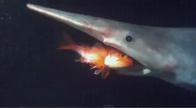
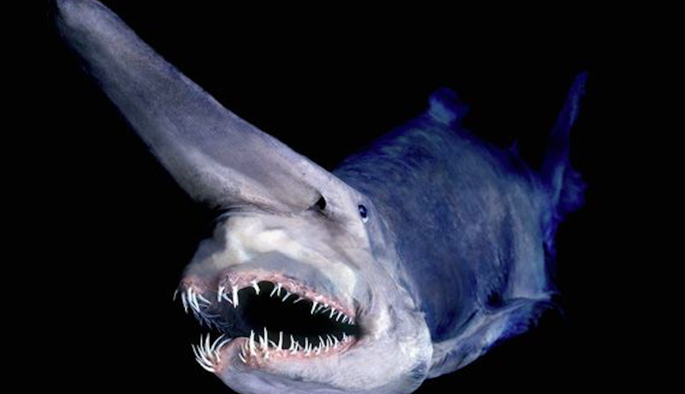

Habitat
Goblin Sharks are deep-sea dwellers, usually found at depths between 100 and 1,200 meters. They prefer the dark, cold waters along continental slopes and submarine canyons where light barely reaches.
They have been recorded in locations across the globe, including Japan, South Africa, Portugal, and the Gulf of Mexico. Because of their remote habitat, encounters with humans are extremely rare.
Cultural Significance
- Known as a “living fossil,” Goblin Sharks fascinate scientists and marine enthusiasts alike.
- Their eerie, otherworldly appearance has made them popular in documentaries and marine-themed media.
- They symbolize the mystery of the deep ocean and are sometimes referred to as the “alien of the sea.”
Goblin Shark Overview
The Goblin Shark (Mitsukurina owstoni) is among the rarest sharks in existence. Belonging to an ancient family dating back over 100 million years, it is often called a “living fossil.”
It is most famous for its long, flat snout and highly extendable jaws, which can shoot forward to capture prey with lightning speed. This unusual adaptation is unique among sharks.
Goblin Sharks are pale pink in color due to blood vessels visible beneath their skin, giving them a ghostly appearance unlike any other shark.
Goblin Shark in the Wild
These sharks inhabit deep waters where sunlight cannot penetrate. They are most often found near the ocean floor, hunting in silence in the pitch-black environment.
Their diet includes deep-sea fish, squid, and crustaceans. By thrusting their jaws forward, they can quickly snatch prey—perfect for the slow, dark conditions of their habitat.
Although they appear menacing, Goblin Sharks pose no threat to humans and are rarely encountered. Their strange looks make them one of the most mysterious species of shark ever discovered.
